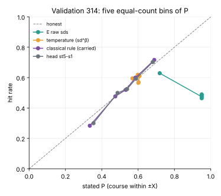
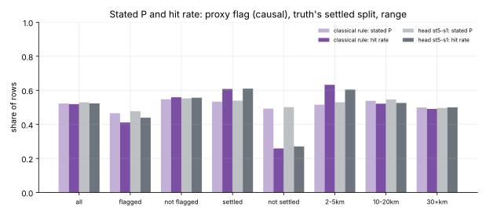

Gate 5: an honest course statement?
2026-11-10 · spec 010, Gate 5 · gitma2 · stopped at validation (panel round 2)
The statement, made consistent
- Course "within ±X with probability P, otherwise unknown"
- Inside the arc: P times a von Mises truncated to ±X; outside: the rest, uniform. The arc mass is P exactly
- P from E's spread, a causal "unsettled" signal (recent bearing residuals, C's open flag) and the minute
- Controls: a classical rule, the sd^β temperature, and an encoder-only shuffle of the learned head
P now ranks hits and sits near the diagonal

E's raw sds claim 0.9 and hit 0.5. The classical rule and the head run from about 0.3 to 0.7 and track the diagonal (AUC 0.65–0.67). The temperature has no resolution: its P is flat at 0.6.
Honest on average, not after an unseen manoeuvre

Flagged rows are mildly over-confident (−0.05). The flag catches only 42% of the truth's unsettled rows, and the rest state 0.53 and hit 0.22. The statement is under-confident at 2–5 km.
The validation verdict (carried st5-s1)
| Check | Value | Outcome |
|---|
| G5-a coverage | 0.938 / 0.938 | pass |
| G5-b reliability, slope | −0.006; 1.25 [1.06, 1.47] | inconclusive |
| G5-c log gain, AUC | +0.80; 0.654 | pass |
| G5-d head − classical | −0.081, but the encoder shuffle −0.039 | void |
| G5-e consistency | points identical; 6e-8 | pass |
Stopped at validation; seed 320 is unused. The classical rule is carried.
What the panel found
- The Platt map made a nearly calibrated P worse: the slope is 1.06 unmapped, 1.25 mapped
- The course arc is fitted too narrow (the log score jumps at X; gradients miss it)
- An encoder-free MLP beats the head by 0.08 and the classical rule by 0.16 (post hoc)
- The per-slice check is weak: a slice off by 0.08 passes about half the time
Not achieved
- Honesty on rows just after an undetected target manoeuvre
- A learning claim beyond an encoder-free model
- A well-fitted course arc
Next (spec 011, recommended)
- Fit the arc by search; drop or re-fit the Platt map on separate scenarios
- Register an encoder-free MLP and an unbounded encoder shuffle before any result
- Give the slice checks power; separate ownship geometry from target manoeuvres
- A fair oracle ceiling; stated files on CI with digests